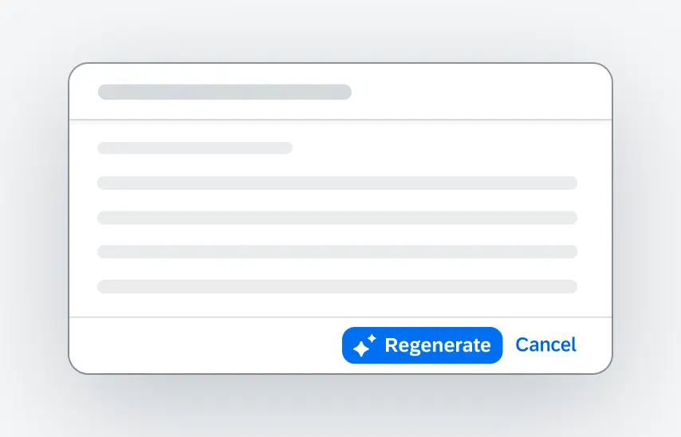
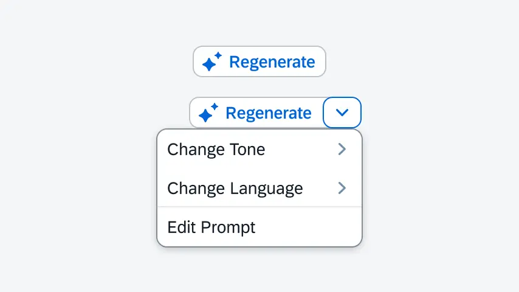

A stakeholder requested a Retry button for Joule, SAP's enterprise AI assistant. The request was based on intuition, not evidence. In two weeks I audited product logs and ran behavioral interviews, zero of eight users wanted a manual button. The feature was deprioritized before engineering scoping began.
My Role
Sole researcher. Scoped the study, audited product logs, recruited via Respondent, ran all sessions, and presented to PM, Design, and AI leadership within two weeks.
Retry feature deprioritized before engineering scoped it, saving ~4 sprint-weeks. Team redirected to graceful in-line recovery patterns. Findings escalated to VP unsolicited. "Conversational vs. UI" framework adopted, 3 subsequent Joule features screened through it.
0/8
Users wanted a manual Retry button
2 wks
End-to-end study on a tight deadline
VP
Findings escalated unsolicited
The Stakes Behind a "Small" Feature
The Retry button looked like a low-risk addition, but the underlying decision carried real cost. Adding a control adds surface area to an already dense AI interface, and shipping it would consume engineering time the team did not have to spare. The more important risk was strategic: building a feature that users would not use signals that the product is being shaped by internal assumptions rather than user behavior. My concern was not whether a Retry button was possible. It was whether the feature should exist at all.
The proposed feature for Joule
Two Joule variants were on the table when the study began: a single Regenerate action and a Regenerate-with-options split control. Engineering was ready to build. This is what did not ship.

Variant A: single Regenerate action anchored to the response card.

Variant B: Regenerate with an options dropdown: Change Tone, Change Language, Edit Prompt.
Why Log Audit and Behavioral Interviews, Not a Survey
A survey asking "would you use a Retry button?" would have returned misleading signal. People reliably say yes to features when evaluated in isolation. I needed two things instead: evidence of what users were actually doing when AI failed, and evidence of what mental model they held about recovery.
The log audit surfaced the behavioral baseline: the frequency and shape of error-recovery moments in real Joule sessions. The behavioral interviews with think-aloud protocol surfaced the mental model: how users interpreted an AI mistake, and what they expected to happen next. Combined, these methods answered whether a manual control matched user behavior at all. On a two-week deadline, this pairing was the minimum viable design that could either confirm or falsify the stakeholder's assumption.
Two evidence sources, one question
Does user behavior around AI errors match the mental model of "reset and try again"?
Behavioral
Product log audit
Reviewed error-recovery sessions in Joule to map what users actually did after a failed response: retry, rephrase, abandon, or continue.
Surfaces behavior
→
Qualitative
Targeted interviews (n=8)
Think-aloud sessions on error-recovery workflows. Participants worked through real prompts and narrated expectations without being primed toward any specific control.
Surfaces mental model
Methods & Operations
Recruitment
Participants recruited through Respondent. Screened for active AI assistant use in an enterprise or productivity context, and for prior experience recovering from AI errors in the past 30 days.
Tools
Respondent (recruitment) · MS Teams (moderated sessions) · internal product logs (behavioral baseline) · Dovetail (transcript synthesis and tagging) · PowerPoint (executive readout)
Ethics & Compliance
All participants provided informed consent before sessions were recorded. Data anonymized in all deliverables. Log audit conducted on aggregated, de-identified session data in accordance with SAP internal privacy protocols.
Timeline
Two-week end-to-end delivery. Week 1: scoping, log audit, recruitment, and pilot session. Week 2: remaining sessions, synthesis, and readout to PM, Design, and AI leadership.
Two weeks, end to end
Every activity sequenced against a hard deadline. No slack, no wasted motion.
Week 1
Day 1–2
Scope + log audit. Baseline behavior mapped from real error-recovery sessions.
Day 3–4
Screener + recruitment. Respondent panel filtered for active AI assistant users.
Day 5
Pilot session + guide refinement. Think-aloud protocol validated before full run.
Week 2
Day 6–8
Sessions 2–8. Behavioral saturation reached by session 5; sessions 6–8 confirmed the pattern.
Day 9
Synthesis in Dovetail. Three findings clustered from tagged transcripts.
Day 10
Executive readout. PM, Design, and AI leadership aligned on deprioritization.
On Sample Size: Why n=8 Was Sufficient
The goal was not to measure frequency: it was to test whether a specific behavioral pattern existed. In focused behavioral research aimed at identifying a recurring pattern rather than estimating a population distribution, thematic saturation is the appropriate stopping criterion. By session 5, every observed user had repaired errors without reaching for a control, and no new behavioral themes had emerged across the prior two sessions. Sessions 6 through 8 confirmed that saturation, and running additional participants to a stable pattern would not have changed the categorical finding. The appropriate next step is a quantitative phase to measure adoption of graceful recovery patterns at scale, not more behavioral interviews.
Key Findings
1
Recovery mattered deeply, but users did not want to be the ones performing it
Every participant cared about what happened after an AI mistake. But when asked what they wanted to see, none described a manual Retry button. They expected the AI itself to recognize the failure, adjust, and continue.
2
Users wanted explanation, not repetition
When an AI response missed, participants wanted a short account of what went wrong or a clear next step. A silent regeneration of the same answer felt like the assistant had learned nothing from the failure.
3
Conversational repair was already the natural fallback
Without a Retry control, participants simply rephrased their prompt. The correction was iterative, not transactional. The label debate the team was having (Retry vs. Regenerate) was solving a problem users did not experience.
What users expected after an AI error
✕
Manual Retry button
The proposed feature. Not requested by a single participant.
0 of 8
↻
Graceful in-line recovery
The AI recognizes the miss and adjusts on its own, without the user having to invoke a control.
Expected by all 8
ℹ
Explanation of the failure
A short account of what went wrong, so users can adjust their next prompt intelligently.
Expected by all 8
→
A clear next step
A concrete suggestion: a follow-up prompt, a related action, or an alternate path forward.
Expected by all 8
"I don't want to press a button to get the same wrong answer. I want it to tell me what it didn't understand."
Enterprise user, describing AI error-repair expectations
What would have shipped in Joule
The Regenerate flow, in motion
The interaction was well-designed. It was not what Joule users needed. The study caught the mismatch before engineering scoping began.
Prototype animation of the proposed Joule feature: Regenerate control expands into tone, language, and prompt-edit options. Every variant assumed the user wanted to invoke recovery manually, which was the exact mental model the study disconfirmed.
Influencing a Skeptical Stakeholder Environment
The challenge
The feature request originated with leadership, and a direction was already implied. Recommending "don't build this" required a higher burden of proof than recommending how to shape a feature. On a two-week timeline, the framing had to make the alternative path immediately actionable.
Anchored the conversation on the shared goal: recovery matters. The question was not whether to invest in recovery, it was whether a manual button was the right investment.
Led with behavior, not interpretation. "0 of 8 users wanted a manual button" is harder to dismiss than a qualitative theme.
Reframed the design question from "how should the button be labeled?" to "how should Joule recover on the user's behalf?" This gave the team a forward direction, not just a stop signal.
Product Implication
The "Conversational vs. UI" framework, which distinguishes when natural-language recovery is sufficient from when UI controls add value, was adopted as a screening lens for future Joule interface decisions. One study created a reusable decision tool the team now applies independently on new AI feature proposals.
Impact
Retry feature deprioritized before engineering scoped it · ~4 sprint-weeks savedFindings escalated to VP unsolicited · team redirected to graceful in-line recovery"Conversational vs. UI" framework adopted · 3 subsequent Joule features screened through it
On ~4 sprint-weeks: PM estimate. The proposed Retry button required two front-end sprints for the control itself plus two back-end sprints for regeneration state handling, error taxonomy, and telemetry. Conservative estimate; excludes downstream QA, accessibility review, and localization work that would have followed.
Reflection
Research can protect a product from feature bloat
The most useful outcome of this study was not a shipped feature. It was a feature that never shipped. Usability research usually asks "is this feature usable?" This study reminded me that the more valuable question is often "should this feature exist?" On a fast-moving AI product, protecting the roadmap from well-intentioned but unvalidated additions is as important as validating the ones that do move forward.
Follow the disconfirmation with a validation phase
The study was rigorous at disconfirming the Retry button. It was weaker at validating the specific graceful-recovery pattern that should replace it. A follow-up phase testing in-line recovery treatments, failure-explanation microcopy, and next-step suggestions would turn "don't build X" into "build Y instead" with the same evidentiary weight.